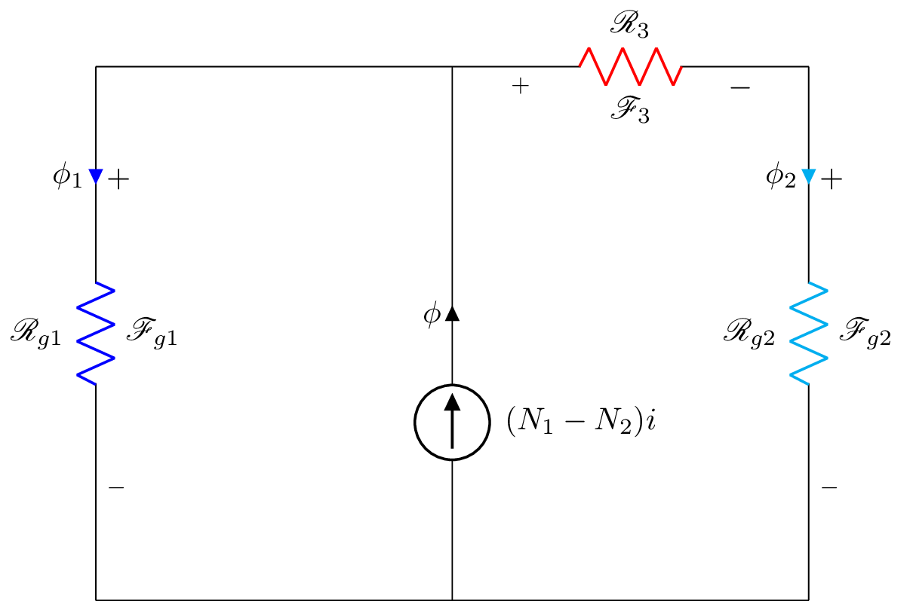

\documentclass{standalone}
\usepackage[american]{circuitikz}
\usepackage{graphicx}
\usepackage{mathrsfs}
\usepackage{latexsym,amssymb,amsmath}
\newcommand{\equal}{=}
\begin{document}
\begin{circuitikz}
\draw (0,0) to [R,i^<=$\phi_1$, l^= $\mathscr{R}_{g1}$,v_<=$\mathscr{F}_{g1}$, color=blue] (0,6)
(0,6) -- (4,6)
(0,0) -- (4,0)
(4,0) to [I,i=$\phi$,l_=$(N_1-N_2)i$] (4,4)
(4,4) -- (4,6)
(8,0) -- (4,0)
(4,6) to [R,l^= $\mathscr{R}_{3}$,v_>=$\mathscr{F}_3$, color=red] (8,6)
(8,0) to [R,i^<=$\phi_2$, l^= $\mathscr{R}_{g2}$,v_<=$\mathscr{F}_{g2}$, color=cyan] (8,6)
;\end{circuitikz}
\label{fig:q1fig}
\end{document}Created by David Li